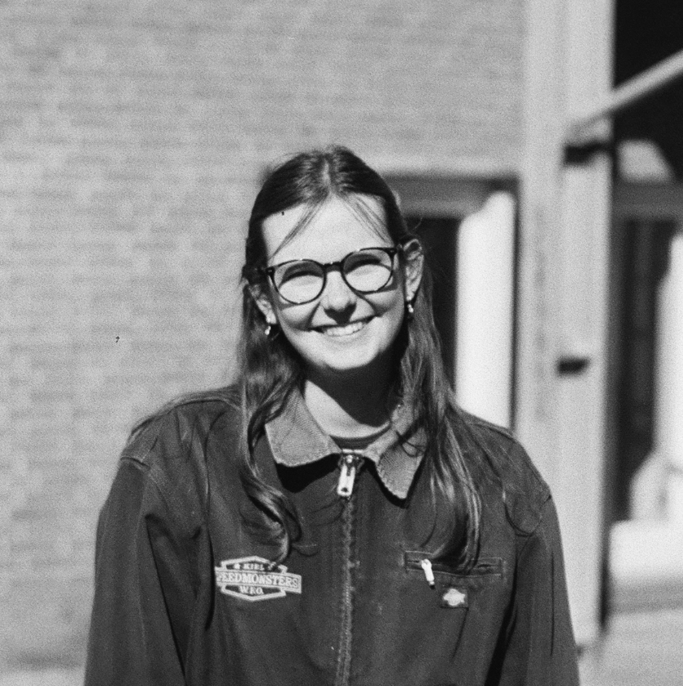
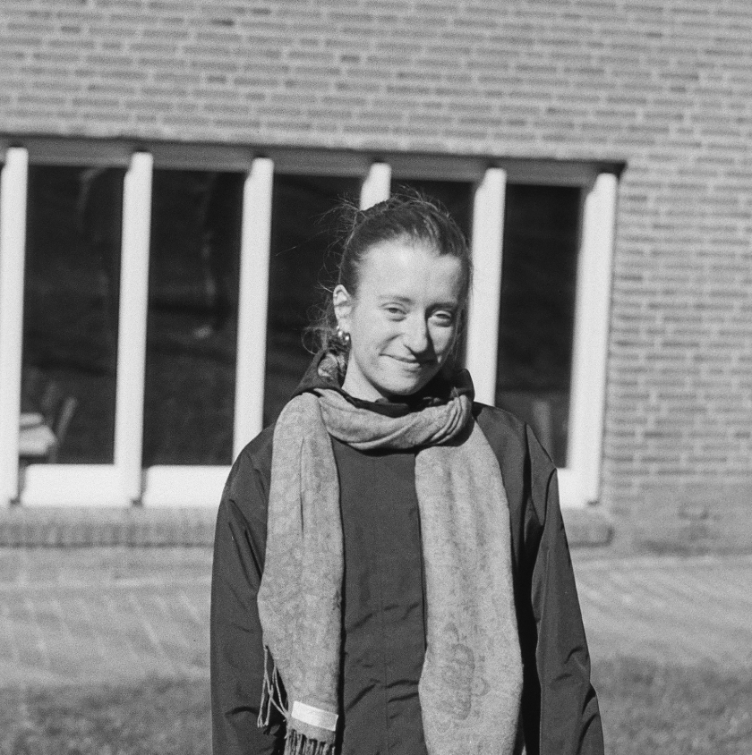

Moin! Wir sind Emma und Martha. Für uns ist veganes Kochen weit mehr als nur eine Ernährungsweise. Es ist eine Leidenschaft. Wir lieben es, in der Küche kreativ zu werden, neue pflanzliche Zutaten auszuprobieren und zu zeigen, wie vielfältig und unfassbar lecker vegane Gerichte sein können.


Die Idee zu dieser Plattform entstand aus einem ganz bestimmten Ziel: Wir möchten Menschen einen leichten und unkomplizierten Einstieg in die vegane Küche ermöglichen. Oft wird pflanzliche Ernährung mit Verzicht in Verbindung gebracht. Wir wollen mit dieser Website genau das Gegenteil beweisen und Inspiration bieten. Unsere Motivation ist es, einen Raum für den generellen Austausch von veganen Rezepten zu schaffen. Diese Website soll nicht nur tägliche Inspiration bieten und wertvolles Wissen vermitteln, sondern vor allem eine lebendige Community fördern. Deshalb möchten wir nicht nur unsere eigenen Ideen präsentieren, sondern laden euch herzlich ein: Entdeckt neue Gerichte, ladet eure eigenen Lieblingsrezepte hoch und lasst uns gemeinsam zeigen, wie bunt und zugänglich veganes Kochen für alle ist!
Bei der pflanzlichen Küche wird komplett auf tierische Lebensmittel verzichtet. Das schließt nicht nur Fleisch und Fisch ein, sondern auch Milchprodukte, Eier und Honig. Das mag im ersten Moment für manche nach Verzicht klingen, aber wir zeigen euch, wie unglaublich reichhaltig und bunt die vegane Küche ist! Die Basis bilden frisches Gemüse und Obst, sättigende Hülsenfrüchte wie Linsen oder Kichererbsen, vollwertiges Getreide sowie Nüsse und Samen. Aus diesen einfachen, natürlichen Bausteinen lassen sich einfache und gesunde Gerichte zaubern. Eine vegane Ernährung trägt auch zum Umweltschutz bei. Da die landwirtschaftliche Tierhaltung enorme Mengen an Ressourcen verbraucht und für einen großen Teil der weltweiten Treibhausgase verantwortlich ist, hat eine vegane Ernährung positive Auswirkungen auf unser Klima. Laut dem WWF könnten wir fast 50 Prozent unserer ernährungsbedingten Treibhausgasemissionen einsparen, wenn wir uns pflanzenbasiert ernähren. Wenn wir Pflanzen direkt selbst essen, anstatt große landwirtschaftliche Flächen für den Anbau von Tierfutter zu beanspruchen, sparen wir massiv Emissionen und entlasten die Natur. Mit jedem veganen Gericht, das du hier entdeckst und nachkochst, entscheidest du dich also nicht nur für ein leckeres Essen, sondern tust auch aktiv etwas für den Klimaschutz.